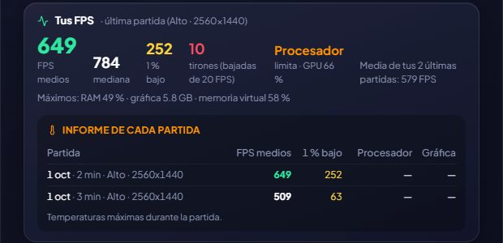

📈
本当のFPS
ゲームに手を加えずにプレイ中のFPSを測定し、何がボトルネックかを教えてくれます。
Intelの無料のオープンソースツールPresentMonを使い、GameHubはゲームがフレームを描画するタイミングを外側から監視します。何も注入しないので、アンチチートの邪魔になりません。ゲームを閉じると、平均FPS、中央値、1% low(動きの滑らかさ)、カクつきをまとめて保存します。
そのセッションのグラフィック設定(画質、解像度、DLSS/FSR、フレーム生成、レイトレーシング、VSync、FPS制限)を記録し、性能を制限しているのがGPU、CPU、FPS上限のどれかを教えてくれます(VSyncやゲーム・ドライバーの制限で上限がかかっていた場合は、CPUのせいにせず「制限あり」と表示されます)。さらに、ゲームが使ったRAM、グラフィックメモリ、仮想メモリも分かるので、不足していないか確認できます。
正しく測定できることを確認済みです。ちょうど360 FPSで動くアニメーションで、GameHubは358.8と読み取りました。プレイ中に見たい場合は、HUDに表示できます。
セッションごとのレポート(ArlequinPro)では、CPUとGPUの温度に加えて、センサーが実際に測定できている場合のみRAMの温度も表示されます。
使い方
- ようこそ画面、またはオプション → あなたのPCでオンにできます(任意です)。Windowsの許可確認は一度だけで、サインアウトまたは再起動後に測定が始まります。
- しばらくプレイしてからゲームを閉じると、ゲームのページの「あなたのFPS」で確認できます。

✦ その他の機能